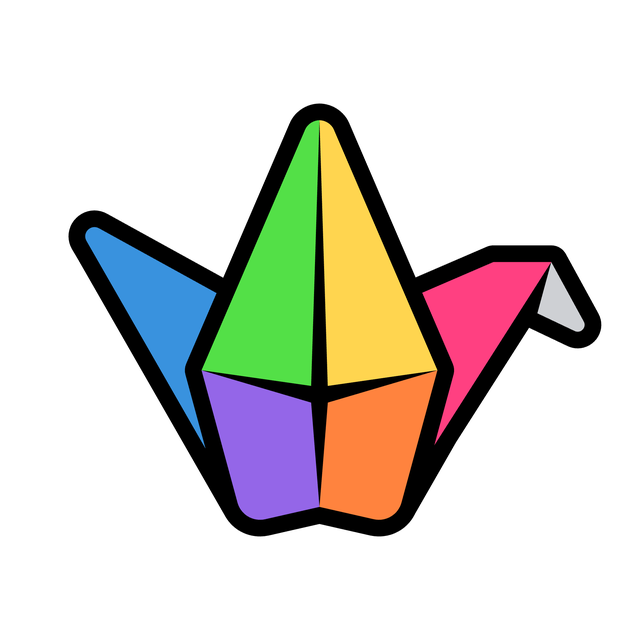
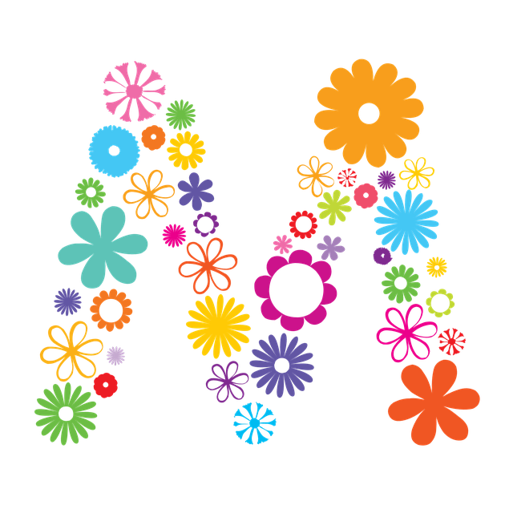
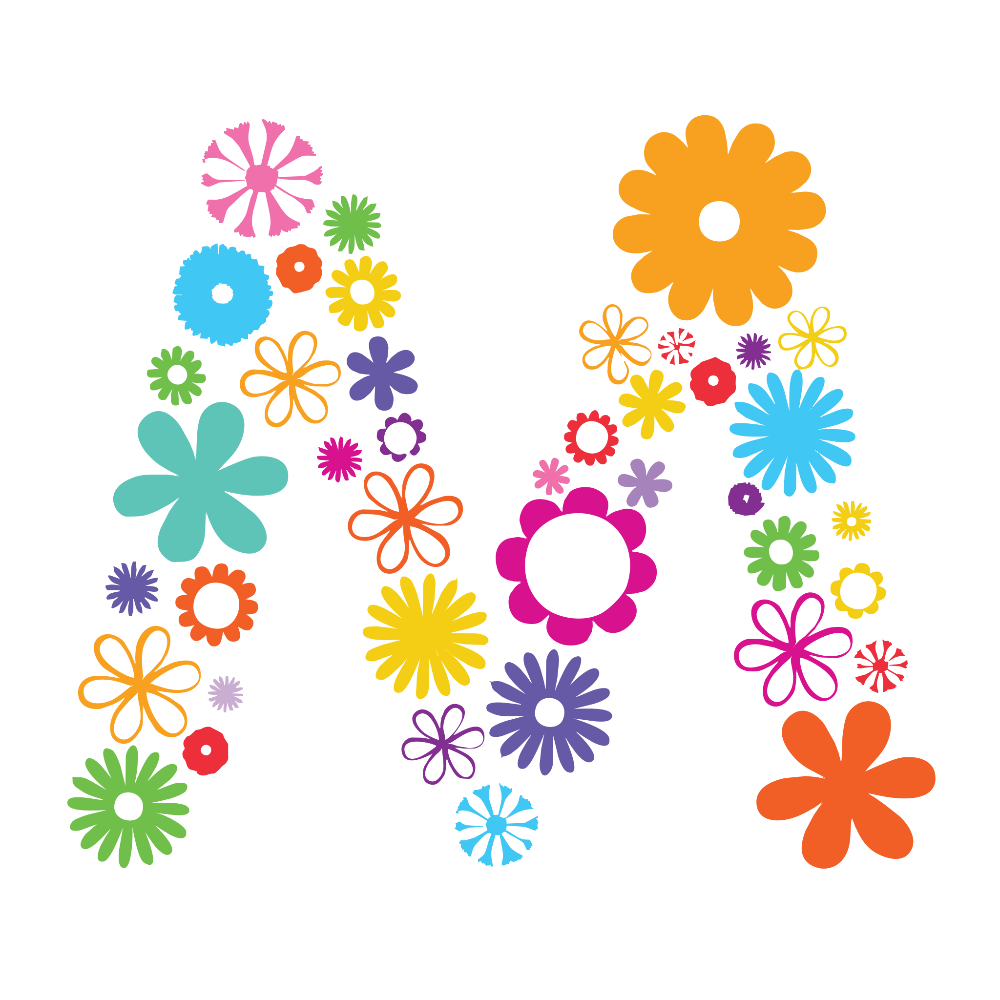

Gallery
9 logos traced with rekha --preset photo --gradients and no other settings, at 2048 pixels. Drag each divider to wipe between the source and the SVG. PSNR is measured over the logo's own pixels after rendering the SVG back at source size; higher is closer. Every SVG links to the file Rekha wrote, so you can open it in your editor.
Want to try your own? Open the playground; nothing is uploaded.

SourceSVG
9 paths, 3 kB, 32.5 dB
SourceSVG

5 paths, 4 kB, 33.3 dB
SourceSVG

17 paths, 9 kB, 10 gradients, 35.9 dB
SourceSVG

2 paths, 44 kB, 24.5 dB



49 paths, 83 kB, 23.7 dB
SourceSVG

6 paths, 6 kB, 1 gradient, 37.0 dB
SourceSVG

69 paths, 25 kB, 23 gradients, 36.8 dB
SourceSVG

16 paths, 14 kB, 4 gradients, 32.6 dB
SourceSVG

13 paths, 11 kB, 30.9 dB